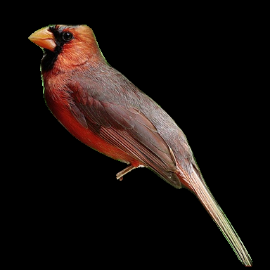
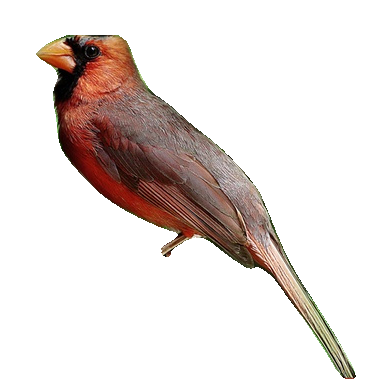
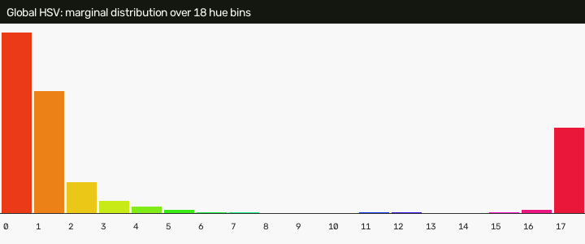
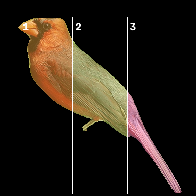
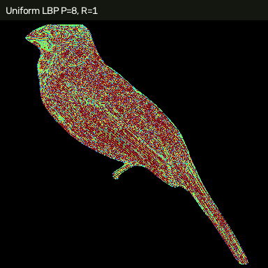
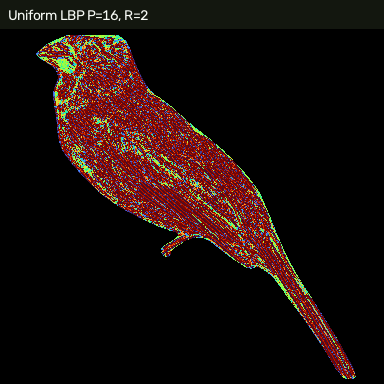
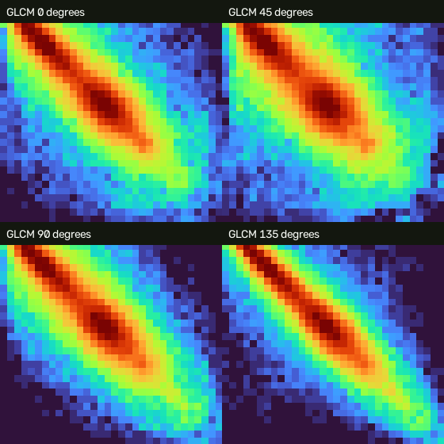
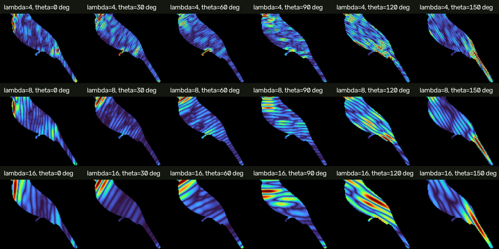
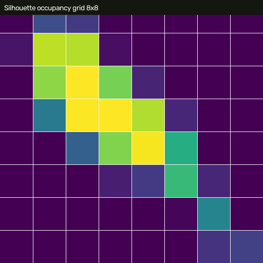
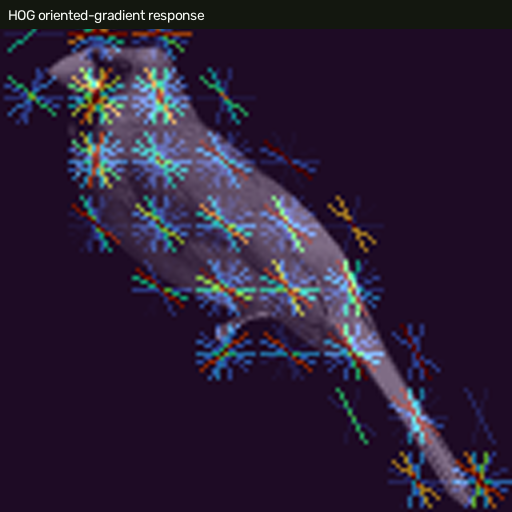

Ảnh đầu vào

Ảnh được đọc từ tệp trước bước chuẩn hóa.
Nguồn: D:\PROJECT\TEST CSDL\app\static\dataset\925f60f0859f58bc_Cardinal_0001_17057.png. Các ảnh màu giả chỉ minh họa đáp ứng; vector tìm kiếm vẫn dùng giá trị số thực từ pipeline.

Ảnh được đọc từ tệp trước bước chuẩn hóa.

Chim được crop, giữ tỷ lệ, đưa vào canvas 384×384 và loại nền bằng mask.
Vùng trắng là foreground được dùng khi trích xuất mọi đặc trưng.

Biểu đồ biên theo Hue của histogram HSV toàn bộ con chim; vector thật còn chứa Saturation và Value.

Ba vùng trái–giữa–phải giữ lại vị trí tương đối của màu trên chim.

Mã vi kết cấu ở bán kính một pixel; màu chỉ dùng để trực quan hóa mã LBP.

Mã vi kết cấu ở bán kính hai pixel; hai histogram tạo thành vector LBP 28D.

Bốn ma trận đồng xuất hiện mức xám; vector lưu mean/std của contrast, energy, homogeneity, correlation và entropy.

18 đáp ứng từ ba bước sóng và sáu hướng; vector lưu mean/std của từng đáp ứng.

Mỗi ô thể hiện tỷ lệ foreground trong một vùng của lưới 8×8.

Các hướng gradient cục bộ mô tả đường biên, mỏ, cánh, thân và đuôi.
| Thuộc tính | Giá trị trước StandardScaler |
|---|---|
| Aspect ratio | 0.930233 |
| Eccentricity | 0.957190 |
| Circularity | 0.300393 |
| Solidity | 0.766432 |
| Extent | 0.272084 |
| Global HSV | 288 |
| Spatial HSV | 216 |
| LBP | 28 |
| GLCM | 10 |
| Gabor | 36 |
| Silhouette | 64 |
| Shape Scalar | 5 |
| HOG | 1764 |
| Tổng | 2411 |
|---|